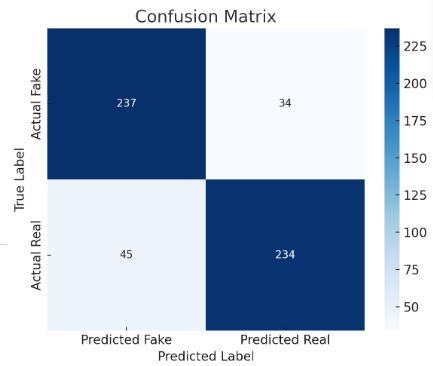
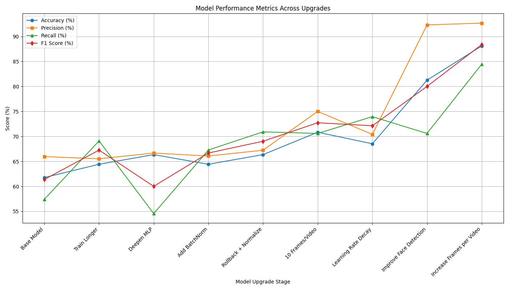
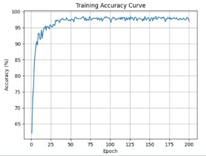
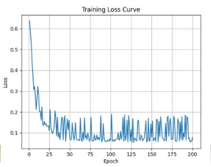

This project is a machine learning-based DeepFake detection system developed to identify manipulated facial videos using frame-level analysis and classification. We focused on building a lightweight yet robust model that can efficiently detect deepfakes across varied datasets. The system integrates advanced preprocessing, feature extraction, and classification techniques to ensure accuracy and scalability.
Initially, we struggled with data imbalance and poor generalization due to limited training samples. Our early models showed low precision and were prone to overfitting. We also faced challenges extracting consistent face regions from video frames due to variation in lighting and angles.
Throughout this project, we deepened our understanding of model generalization, data preprocessing, and pipeline design in real-world ML tasks. We saw firsthand how minor inconsistencies in face cropping or lighting can skew performance, and how important it is to account for this in both preprocessing and architecture. We also gained valuable experience working collaboratively through version control, Git, and team-based task distribution.
Deepfake content is increasingly prevalent across social media and political spheres, posing threats to privacy, misinformation, and public trust. This project illustrates a scalable, open-source solution toward mitigating such risks. By building a detection system from scratch, we not only honed our ML skills but contributed to the growing dialogue on ethical AI development.



